Hobby's
In deze pagina ga ik je vertellen over mijn hobby's.
Gamen
Ik hou super veel van gamen. Ik game eigenlijk wel elke dag. Wanneer ik klaar ben met school ga ik naar huis en start ik gelijk mijn pc op. Ik game het vaakst met vrienden. Als ik met mijn vrienden speel dan spelen we vaak games zoals Siege, Rocket League, soms Fortnite en vooral race games. De meeste race spellen die ik heb kan je niet met vrienden spelen zoals Gran Turismo 7, Dirt Rally 2.0 en WRC De meeste spellen die ik alleen speel zijn rally spellen. Als ik met mijn vrienden ga racen spelen we vaak Assetto Corsa, Assetto Corsa Competizione, Euro Truck Simulator 2, BeamNG.drive, Le Mans Ultimate en vooral F1
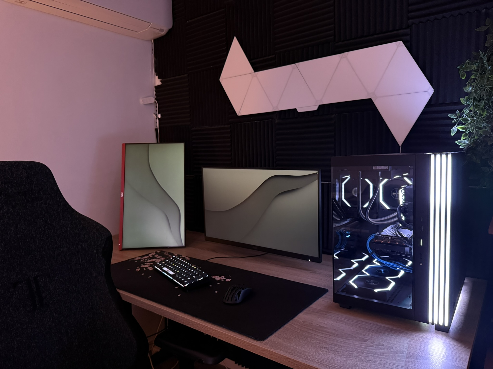
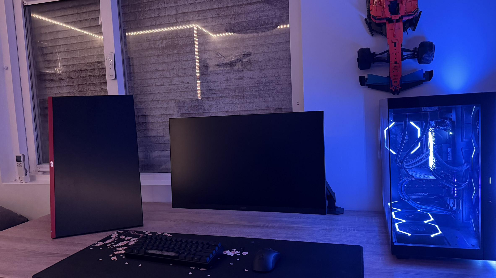
Series kijken
Ik hou ook van series kijken. Ik kijk vaak series op Netflix en Disney+. Ik kijk super veel series alleen noem ik series op die ik echt geweldig vond. Als eerst ga ik het hebben over Breaking Bad. Breaking Bad is een serie over een scheikundeleraar die kanker heeft en geld wil verdienen voor zijn gezin. Hij gaat meth maken en verkopen. Het is een super spannende serie en ik vond het echt geweldig. Als tweede op het lijstje heb ik The Bear. The Bear is een serie over een jonge chef die terug naar huis gaat om het restaurant van zijn overleden broer over te nemen. Het is een super spannende serie en ik vond het echt geweldig. Als derde heb ik staan The Last of Us. The Last of Us is een serie over een man en een meisje die door een post-apocalyptische wereld reizen. Het is een super spannende serie en ik vond het echt geweldig. Vooral omdat ik de game The Last of Us 1 en 2 heb gespeeld en ik vond het echt geweldig. Ik speelde het spel samen met mijn vader. Ik ging dan de playstation bij de tv neer zetten en gingen we om de beurt spelen. Die tijden met mijn pa waren geweldig. Stiekem wil ik nog zo'n leuke story game spelen. Als laatste heb ik Cobra Kai. Cobra Kai is een serie over de karate. Het was begonnen met twee verschillende dojo's. Dat is Cobra Kai en Miyagi-Do. Later kwamen er meer dojo's erbij en het verhaal ging verder. Ik vind het een hele leuke serie, vooral omdat het mijn eerste serie is die ik heb gekeken en ook omdat ik die keek in quarantaine tijd.
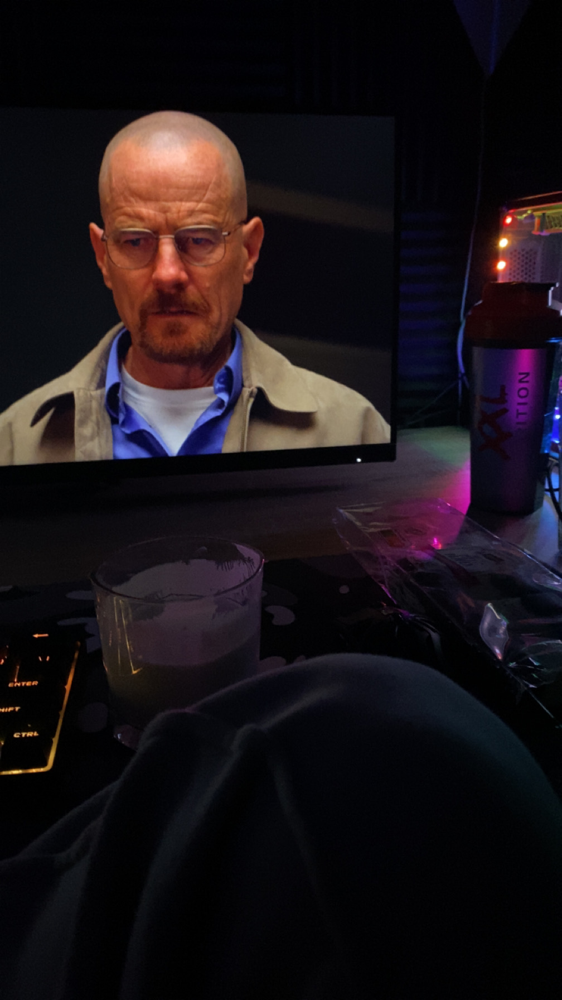
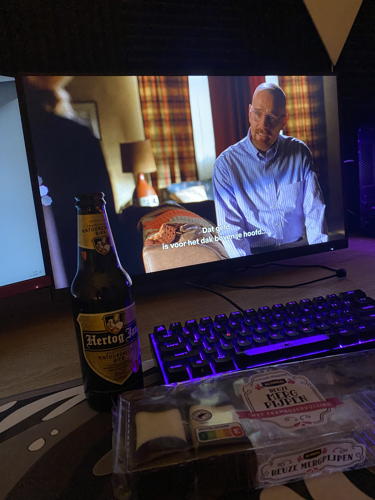
Wakeboarden
Wakeboarden is voor mij meer een sport, maar ik doe het niet vaak genoeg om het dat te noemen, dus vandaar dat het een hobby voor mij is. De meeste mensen weten niet eens wat wakeboarden is en hebben er nog nooit van gehoord, wat ik eigenlijk best wel jammer vind. Ik vind het de beste watersport die er bestaat. Wakeboarden is eigenlijk met een soort snowboard op water staan. Je wordt dan vervolgens mee getrokken door een kabelbaan of een boot. Ik doe het vaakst bij een kabelbaan. Ik ben met wakeboarden begonnen toen ik rond de 13 jaar was. Ik zat in een vakantiepark in Limburg vlakbij Toverland en daar was een wakeboardbaan. Ik had het daar voor het eerst geprobeerd en ik vond het super leuk. Ik ben er toen mee door gegaan en ik doe het nu nog steeds. Ik ga in de volgende pagina er meer over vertellen, want ik vind het stiekem wel leuk om over wakeboarden te praten.
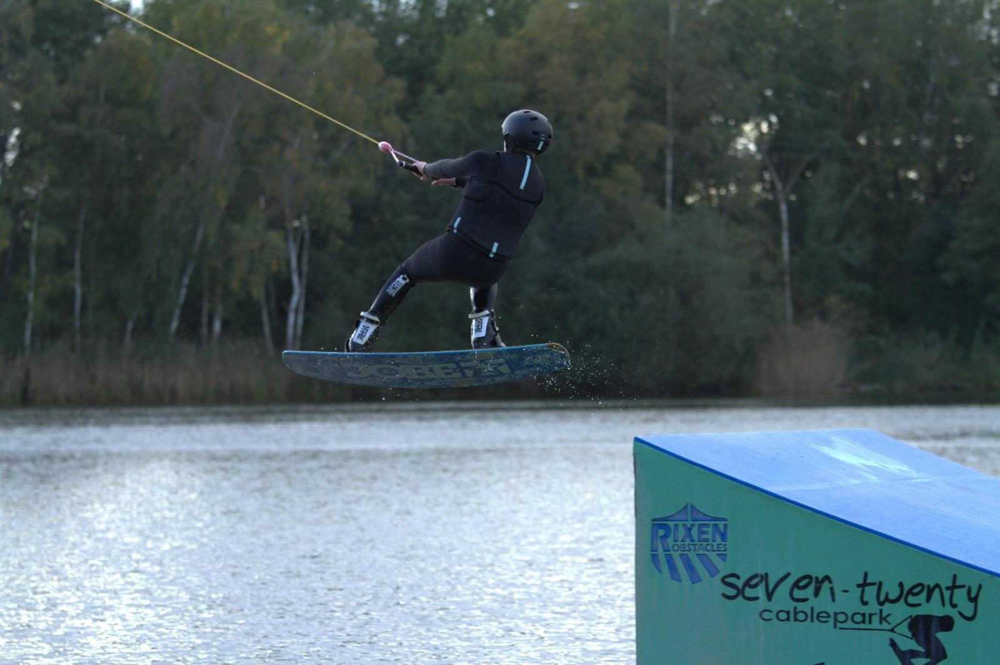
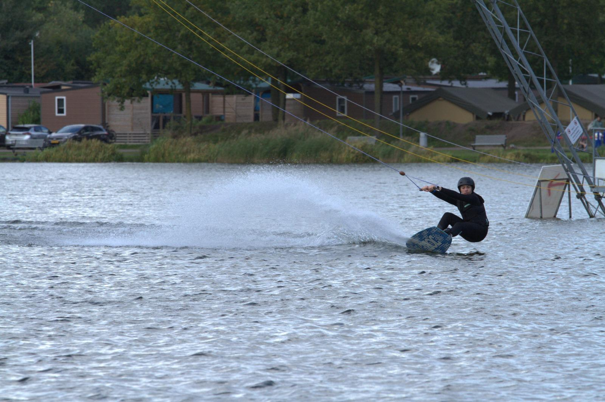
Vinyl's
Ik verzamel platen. Een ander woord voor platen is vinyl. Mensen zeggen tegen me dat ze niet snappen waarom ik platen verzamel, omdat het heel oud is. Wat de meeste mensen vooral zeggen wat ik persoonlijk haat is "Waarom koop je platen wanneer je het ook gewoon op spotify kan luisteren. Ik heb een hekel aan die woorden. Het is een hobby. Spotify is niet hetzelfde als een vinyl. Het brengt muziek luisteren naar een ander niveau. Het laat ook zien wat voor muziek je interresant vindt. Ik heb al iets over 60 platen. Al mijn geld gaat naar platen, omdat ik mijn collectie wil uitbreiden. Ik heb ook een hele goeie setup waar ik muziek mee kan luisteren. Het is een setup die verre boven de gemiddelde JBL speakers zit. Ik heb wel duizenden euro's uitgegeven aan mijn collectie en mijn setup, dus ja je kan zeggen dat het mijn favouriete hobby is.
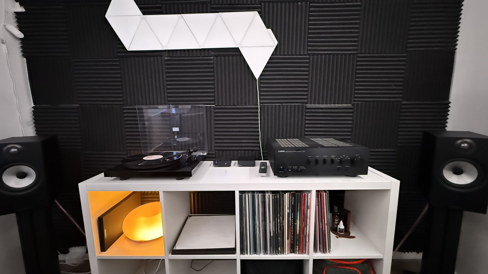
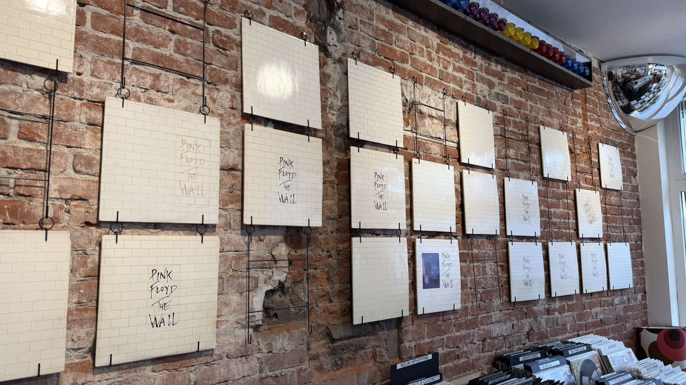
Sportschool
Naar de Basic-Fit gaan is ook een van mijn favouriete hobby's. Ik ga wel zoizo elke week 1 of 2 keer naar de sportschool. Ik ga meestal met mijn vrienden, maar soms ga ik ook alleen. Ik vind het leuk om een betere fysiek te krijgen en om meer gewicht op te kunnen tillen. Niet om te flexen, maar ik bench press bijvoorbeeld 90 kilo en dat is best wel veel. Ik ben ook bezig met een sixpack te krijgen, maar dat is nog niet gelukt. Ik ben er wel mee bezig en ik hoop dat ik het ooit ga halen. In de volgende pagina ga ik er meer over vertellen.
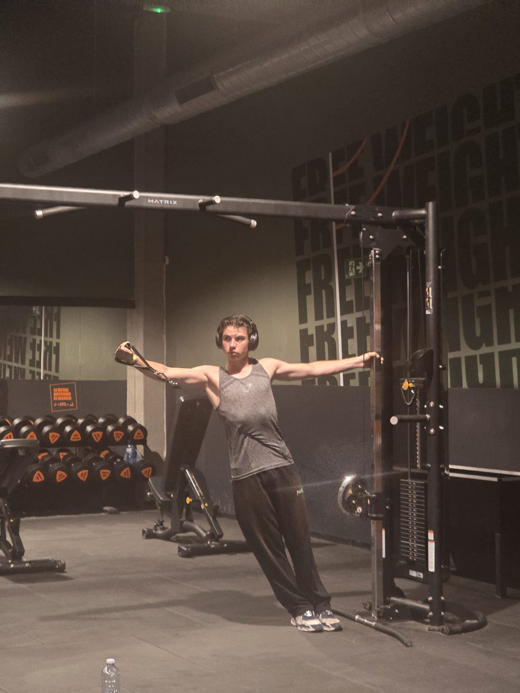
Koken
Koken is ook een van mijn favouriete hobby's. Ik vind het leuk om nieuwe recepten uit te proberen en om nieuwe gerechten te maken. Ik kook het vaakst pasta. Mijn ouders zeggen dat als het om Italiaanse eten gaat, dat ik een echte Italiaan ben. Ik wil namelijk dat alles wat ik maak perfect is. Ik moest zelfs uitleggen aan mijn moeder wat pastawater is. Ze dacht ik was gek. Ik vind het leuk om nieuwe gerechten te maken en om nieuwe smaken te ontdekken. Bakken vind ik ook. Met bakken maak ik vooral Creme Brûlée.
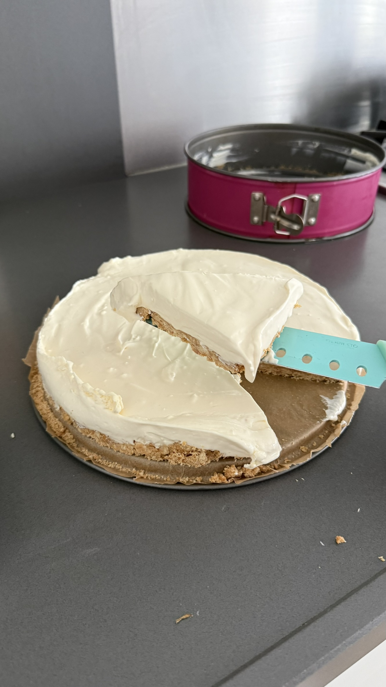
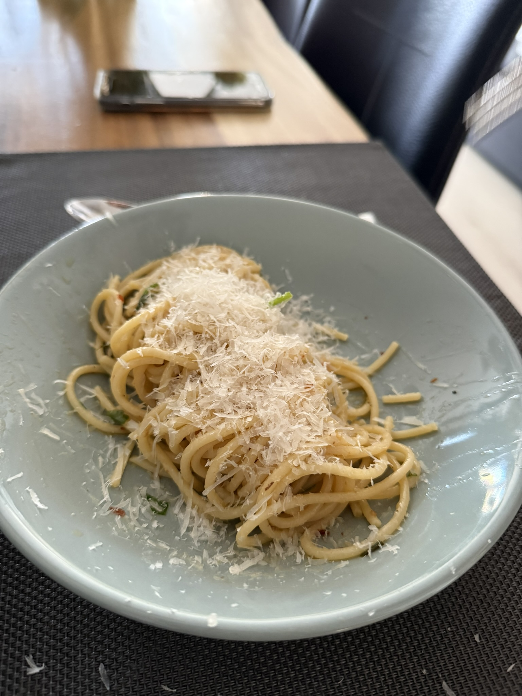
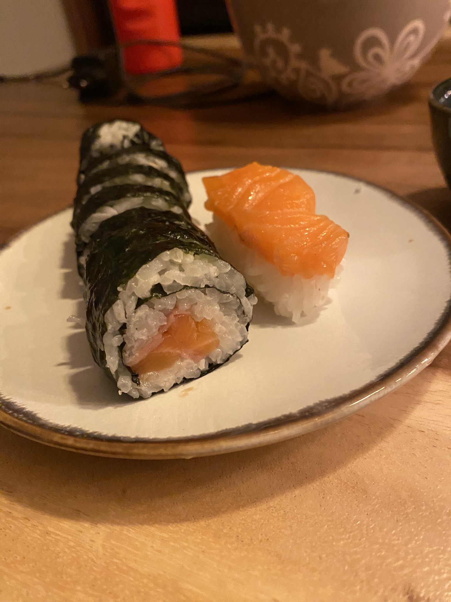
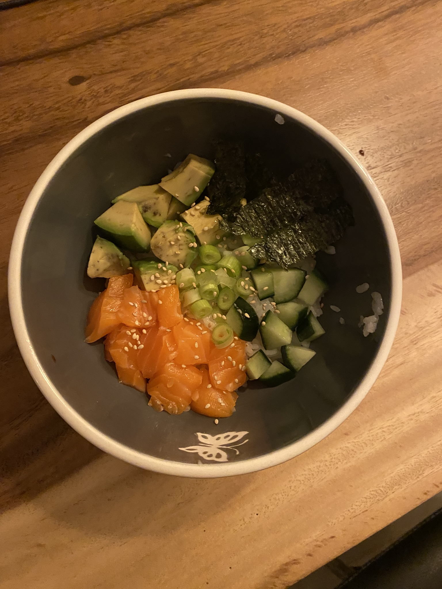
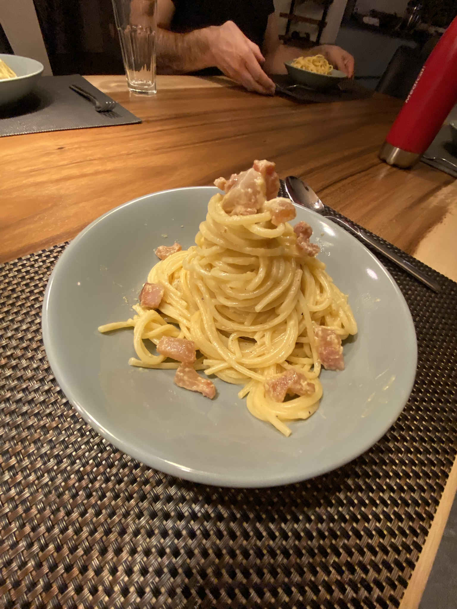